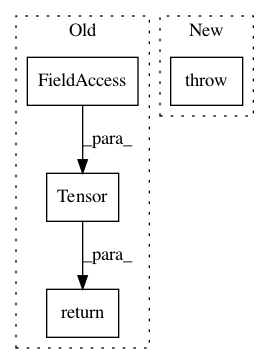

6a5916968838686e332fb68a10cb30222843fbd9,torchnlp/word_to_vector/pretrained_word_vectors.py,_PretrainedWordVectors,__getitem__,#_PretrainedWordVectors#Any#,77
Before Change
if token in self.stoi:
return self.vectors[self.stoi[token]]
else:
return self.unk_init(torch.Tensor(self.dim))
def __len__(self):
return len(self.vectors)
After Change
token = tokens
return self._get_token(token)
else:
raise TypeError(""__getitem__" method can only be used with types"
""str", "list", or "tuple" as parameter")
def __len__(self):
return len(self.vectors)
In pattern: SUPERPATTERN
Frequency: 3
Non-data size: 4
Instances
Project Name: PetrochukM/PyTorch-NLP
Commit Name: 6a5916968838686e332fb68a10cb30222843fbd9
Time: 2018-04-26
Author: florian.joh.schaefer@gmail.com
File Name: torchnlp/word_to_vector/pretrained_word_vectors.py
Class Name: _PretrainedWordVectors
Method Name: __getitem__
Project Name: keras-team/autokeras
Commit Name: f3a63d2535c2e188d4af85c9a8c2fbcd434ba557
Time: 2018-10-19
Author: lin.yang@tamu.edu
File Name: autokeras/preprocessor.py
Class Name: DataTransformer
Method Name: transform_test
Project Name: keras-team/autokeras
Commit Name: f3a63d2535c2e188d4af85c9a8c2fbcd434ba557
Time: 2018-10-19
Author: lin.yang@tamu.edu
File Name: autokeras/preprocessor.py
Class Name: DataTransformer
Method Name: transform_train